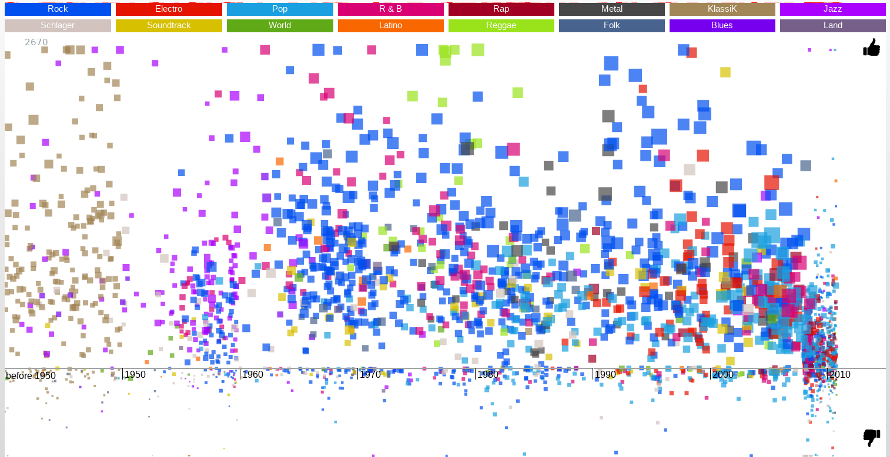

2 Einstieg¶
'' Der Computer wurde zur Lösung von Problemen erfunden, die es früher nicht gab. ''
—Bill Gates
2.1 Einsatzszenarien¶
Wo ist also das Problem dass libmunin nun lösen soll?
Das erklärte Ziel ist es eine Bibliothek (,, libmunin '') zu schaffen die einen auf Musik spezialisierten Empfehlungsdienst implementiert.
Ein Empfehlungsdienst (englisch Recommender System) ist ein automatisches Verfahren, das ausgehend von vorhandenen Webseiten oder anderen Objekten ähnliche Objekte ermittelt und empfiehlt. Zur Ermittlung der passenden Empfehlungen verwendet ein Empfehlungsdienst Methoden des Data-Minings und Information Retrieval. [...] darüber hinaus [werden] Informationen aus dem konkreten Kontext (Webseiten-Zugriff) und zusätzliche Informationen wie z. B. die Kauf-, Navigations- oder Klick-Historie herangezogen.
Einsatzmöglichkeiten eines auf Musik spezialisierten Empfehlungsdienstes:
- Einsatz in Mediaplayern für große (lokale) Musiksammlungen.
- Einsatz bei Music Streaming Plattformen als Backend für Empfehlungen.
- Einsatz bei Music Shops - um ähnliche Artikel vorzuschlagen.
- Einsatz bei webradios als DJ-Software - Erstellung einer automatischen Playlist.
- Einsatz in sozialen Netzwerken um Menschen mit ähnlichem Musikgeschmack zu finden.
Weitere Einsatzmöglichkeiten sind natürlich denkbar und sind bei kreativen Nutzern zu erwarten.
2.2 Vorhandene Alternativen¶
Wenn man vermeiden will das Rad neu zu erfinden ist es hilfreich sich vorhandene Alternativen anzuschauen und deren Herangehensweise an das Problem. Es werden einige ausgewählte Plattformen aller Couleur gezeigt und deren Funktionsweise und Besonderheiten kurz erklärt.
2.2.1 Bekannte Plattformen¶
TODO: Nachweise
last.fm (http://www.last.fm)
Der wohl bekannteste Musik Empfehlungs Service im Netz. User können sich mit ihren Account ein personalisiertes Webradio (auch Station genannt, siehe 2.1b) zusammenstellen. Dabei wählen sie ein Lied auf der Seite aus und lassen sich darauf basierend dann weitere Lieder oder Künstler (siehe 2.1a) vorschlagen die in eine ähnliche Richtung gehen. Für viele Musicplayer gibt es Plugins die die gespielten Lieder zu last.fm übermitteln. Diesen Vorgang nennen die Betreiber scrobbeln. Durch diese Informationen werden dann spezialisierte Empfehlungen getroffen - es handelt sich also um ein lernendes System.

(a) Anzeige ähnlicher Künstler auf last.fm

(b) Eine Station auf Spotify (Empfehlungen von last.fm)
Figure 2.1: Screenshots von https://www.last.fm
YouTube (http://www.youtube.de)
Youtube ist vorrangig als Videoplattform bekannt, durch ihre enorme Beliebtheit laden dort Nutzer allerdings auch Musik - verpackt als Video - hoch. Interessant dabei ist dass in der Sidebar stets Empfehlungen für weitere Videos angezeigt (siehe 2.2) - in den meisten Fällen dann auch weitere Musikvideos. Dabei haben die meisten Videos auch etwas mit dem aktuellen zu tun - nur einige der ersten Empfehlungen sind die ,,Trending Videos''.
Einige der Attribute die in die Empfehlung mit eingehen:
- Video-Metadaten (Qualität, Beschreibung, Titel)
- Upload-Datum
- ,,Plays'' und tatsächliche ,,Plays'' (also ob das video lang genug angeschaut wurde)
- ...

Figure 2.2: Die Vorschläge zu einem Musikvideo auf YouTube
MySpace
Obwohl das soziale Netzwerk myspace seine besten Tage hinter sich hat haben viele Bands noch auf der Seite ein Profil unter dem man sich oft kostenlos Musik anhören kann (siehe 2.3). Ähnlich wie bei anderen populären sozialen Netzen kann man diese Seite liken. Diese Information wird dann dafür genutzt einem User Bands vorzuschlagen die auch seine Freunde mögen - unter der Annahme dass die Freunde einen ähnlichen Musikgeschmack haben.

Figure 2.3: Die Vorschläge die MySpace basierend auf den ersten Song macht.
Amazon (http://www.amazon.de)
Den Grundstein für die Empfehlungen bei amazon bilded die Warenkorbanalyse. Dabei werden die Warenkörbe der User analysiert und es werden Assoziationsregeln erstellt - bevorzugtermaßen Regeln die unerwartete Zusammenhänge aufdecken. Das typische Beispiel ist dabei: ,,Wer Bier kauft, kauft auch Windeln''. Diese Regeln werden dann genutzt um neue Artikel für bestimmte Artikel vorzuschlagen (siehe 2.4). Natürlich fließt auch die personalisierte Shopping-Historie in die Empfehlunge mit ein.
Zudem hat amazon im vergleich zu den oben genannten Plattformen den Vorteil dass der Kauf eines Artikels ein klare Absichtserklärung ist - bei Plattformen wie Youtube schaut man hingegen ein Video oft aus Neugier an obwohl dieses möglicherweise nicht in das Muster des Users passt.

Figure 2.4: Zu fast jedem Artikel erhält man Empfehlungen was man noch kaufen könnte. Hier zu Knorkator - The Schlechtest of
2.2.2 Sonstige Webseiten¶
tastekid (http://www.tastekid.com/)
Tastekid ist ein allgemeiner Empfehlungsdienst und kann neben Musik auch Künstler (siehe 2.5), Videos, Bücher und vieles mehr vorschlagen. Es kann als Meta-Aggregator für Empfehlungen aufgefasst werden - die eigentlichen Grunddaten kommen von anderen Diensten (im Falle von Musik von last.fm).
Basierend auf diesen Grunddaten werden noch die User eingebunden indem sie die Empfehlungen liken oder disliken können. Klar fehlerhafte Empfehlungen können gemeldet werden woraufhin sie nach einer manuellen Beschauung korrigiert werden.
Eine interessante Idee ist dabei dass die Resultate auch begründet werden - so wird die Suche nach ,,The Beatles'' folgendermaßen begründet:

Figure 2.5: Die Empfehlung von tastekid.com zu Knorkator - man beachte dass die Eingabe automatisch als Künstler erkannt wurde.
Musicovery (http://musicovery.com/)
Diese Seite kategorisiert eine groß Anzahl von Musikstücken nach Stimmung (dunkel bis positiv) und Tempo (ruhig bis energiegeladen). Diese zwei Attribute werden an den Achsen eines Koordinatensystems aufgetragen. So erhält der User eine Möglichkeit einen Punkt darin zu selektieren und basierend auf diesen Eigenschaften sich Empfehlungen liefern zu lassen (siehe 2.6a).

(a) Die Moodmap
(b) Die Musicmap (auch Likemap genannt). Schwer zu erkennen ist die Beschriftung der X-Achse: 1950-2010.
Figure 2.6: Verschiedene Möglichkeiten auf musicovery.com
Der sonstige Hauptzweck der Seite besteht aus der Music Discovery (daher auch das Kofferwort aus Music und Discovery als Name) - also dem Entdecken neuer Musik. Ein Beispiel dafür ist die sogenannte MusicMap (siehe 2.6b) - ein Koordinatensystem bei dem auf der X-Achse die Zeit (1950 - 2010) und nach oben das Verhältnis von Likes zu Dislikes. Mit anderen Worten: Liegt ein Punkt etwa in der Mitte der Höhe so mochten ihn genauso viele Leute wie sie ihn nicht mochten. Je weiter weg man von der Mitte ist desto einiger sind sich die User ob der Song gut oder schlecht ist.
{kind=link}
2.2.3 Software-Bibliotheken¶
Während die Anzahl der Plattformen noch ins unermeßliche ging, so liefert eine suche nach Music Recommendation (Library|System|Engine) schon deutlich weniger Resultate. Es scheint keine etablierte Bibliothek zu geben die dieses Problem angeht.
mirage (http://hop.at/mirage/)
Eine freie in der Programmiersprache C# (mithilfe von Mono) implementierte Bibliothek für Music Recommendations. Sie kommt den Zielen des Autors am nähesten ist aber wenig auf große Datenbanken ausgelegt und stützt sich allein auf Audio-Analyse - dazu wird während des Kaltstartes die gesamten Audiodaten der Musiksammlung analysiert.
Sie ist momentan nur im freien Mediaplayer Banshee als Plugin nutzbar. Banshee selbst ist ebenfalls in C# geschrieben - die Wahl der Programmiersprache ist für die Bibliothek also von nicht geringer Bedeutung.
mufin audiogen (http://www.mufin.com/products/audiogen/)
Eine kommerzielle in C++ entwickelte Bibliothek die im (mittlerweile eingestellten) Mufin-Audioplayer verwendet wurde. Sie bietet - laut der Werbebroschüre - enorm viele Features und hat nicht das Problem des Kaltstartes. Das soll heißen: Die Musikdatenbank muss nicht erst aufwändig importiert werden was zu einem, sondern es können gleich Empfehlungen getroffen werden.
Zudem sind Visualisierungen und mobile Anwendungen mit der Bibliothek möglich.
2.3 Vorhandene Arbeiten¶
Wie bereits eingangs erwähnt gibt es eine zwar noch überschaubare aber doch schon recht umfangreiche Menge an Arbeiten zum Thema Music Recommendation.
Einige ausgesuchte Arbeiten werden im folgenden aufgelistet und deren Kernaussagen im Bezug auf diese Arbeit erläutert:
A self-organizing map based knowledge discovery for music recommendation systems [6]
Statt den Computern die Ähnlichkeit zwischen zwei Liedern zu bestimmen zu lassen verwendet diese Arbeit Reviews von Amazon um daraus Beziehungen zwischen Künstlern abzuleiten.
Dieser Ansatz fällt unter Social-based Recommendations - man nutzt also das Wissen vieler Menschen um Ähnlichkeiten abzubilden. Dies steht im Gegensatz zu Content-based Recommendations - bei diesen wird die Ähnlichkeit anhand von Audio- und Metadaten automatisch ermittelt.
Vorteil: Elegant und oft sehr akkurat.
Nachteil: Unvollständig, nicht für jeden Artist ist eine Empfehlung vorhanden.
Smart radio-building music radio on the fly [2]
Smart-Radio: Die Musik der Zukunft kommt aus dem Web... TODO
A music search engine built upon audio-based and web-based similarity measures [4]
Das in diesem Paper vorgestellte System kommt der Vorstellung von libmunin am nähstem. Die Audio- und Metadaten der einzelnen Lieder wird analysiert und abgespeichert. Fehlende Metadaten werden automatisch aus dem Netz bezogen (Reviews und Lyrics). Statt die Musikstücke aber zueinander in Relation zu setzen werden die Informationen für eine skalierbare Suchmaschine benutzt die basierend auf natürlicher Sprache (rock with great riffs) passende Lieder findet.
Music for my mood [5]
Die Ähnlichkeit zwischen zwei Stücken wird über die Stimmung in einem Lied definiert. Diese wird durch Audioanalyse extrahiert.
2.4 Schlussfolgerungen¶
TODO
Folgende Ideen sind übernehmenswert:
- lernendes System, nutzer-erfahrung (last.fm)
- Einbeziehung von Metadaten (youtube)
- warenkorbanalyse zum lernen nutzen (amazon)
- soziele empefhlung (myspace)
- mood basiert (musicovery) / audio analyse (mirage)
- graphen basiert (mufin)
Stolpersteine die man vermeiden sollte:
- Kaltstart (mufin)
- Große Datenmengen (mirage)
- Programmiersprache (mirage)
- Keine Abhängigkeit von Audiodaten (mirage)
- Lizenz (mufin)
2.5 Anforderungen¶
Nachdem man sich also das Umfeld angeschaut hat kann man versuchen Anforderungen abzuleiten die eine gute Schnittmenge aus den obigen Plattformen und Arbeiten bildet, welche dann das System erfüllen muss.
Dabei wird zwischen technischen Anforderungen und weichen Anforderungen unterschieden - erstere sind atomar, sprich sie können ganz oder gar nicht erfüllt werden, letztere können partiell erfüllt werden.
2.5.1 Technische Anforderungen¶
2.5.1.1 Performante Empfehlungen¶
Ausstellen von Empfehlungen muss performant möglich sein.
Da später sehr viele Anfragen, unter Umständen gleichzeitig, an das System gestellt werden darf auch eine Abfrage von 100 Empfehlungen nicht länger als eine Sekunde dauern.
Die eigentliche Arbeit muss daher in einem vorgelagerten Analyse-Schritt erfolgen und die daraus gewonnenen Kenntnisse in einer geeigneten Datenstruktur gespeichert werden.
2.5.1.2 Empfehlungen bilden eine Kette¶
Wird eine Anfrage an das System gestellt so wird ein Iterator zurückgegeben der alle dem System bekannten Songs nach Relevanz absteigend sortiert ausgibt.
2.5.1.3 Handhabung großer Datenmengen.¶
Groß definiert sich hierbei durch das Einsatzszenario. Bei privaten Musiksammlungen beträgt die maximale Größe die problemlos unterstützt werden soll bis zu 40.000 Lieder.
Größere Datenmengen, wie sie vlt. bei Webradios vorkommen, sollen auch unterstützt werden. Hier ist allerdings dann ein höherer Rechenaufwand gerechtfertigt.
2.5.1.4 Lizenz¶
Die Lizenz sollte einen libertären Einsatz ermöglichen und sicherstellen dass Weiterentwicklungen in das Projekt zurückfließen.
Die GPLv3 Lizenz erfüllt diese Bedingungen. Der kommerzielle Einsatz ist erwünscht.
2.5.1.5 Begründbarkeit¶
Empfehlungen sollen begründbar sein.
Es muss möglich sein welche Merkmale eines Songs zu der Empfehlung geführt haben.
2.5.2 Weiche Anforderungen¶
2.5.2.1 Anpassungsfähige API¶
Die bereitgestellte API muss auf die stark variierende Qualität und Form von Musiksammlungen eingestellt sein.
Viele existierende Musiksammlungen sind unterschiedlich gut mit Metadaten (Tags) versorgt. So sind manche Tags gar nicht erst vorhanden oder sind je nach Format und verwendeten Tagging-Tool/Datenbank anders benannt.
Das fertige System soll mit Szenarien zurecht kommen wo lediglich die Metadaten der zu untersuchenden Songs zur Verfügung stehen, aber nicht die eigentlichen Audio-Daten. Dies kann beispielsweise vorteilhaft in Fällen sein bei denen man die Lieder nicht selbst besitzt aber Zugriff auf Musikdatenbanken wie MusicBrainz.
2.5.2.2 Programmiersprachen agnostisch¶
Das System soll von mehreren Programmiersprachen aus benutzbar sein.
Dieses Ziel könnte entweder durch verschiedene Languagebindings erreicht werden, oder alternativ durch eine Server/Client Struktur mit einem definierten Protokoll in der Mitte.
Portabilität ist für das erste zweitrangig. Für den Prototypen sollen lediglich unixoide Betriebssysteme, im speziellen Arch Linux 1, dem bevorzugten Betriebssystem des Autors, unterstützt werden.
2.5.2.3 Demonstrations und Debuggeranwendung inkludiert¶
Eine Demonstrations-Anwendung sollte entwickelt werden die zur Fehlersuche, Verbesserung und als Einsatzbeispiel dient.
Als Demo-Anwendung eignet sich ein Musicplayer der dem Nutzer mithilfe des zu entwickelnden System Musikstücke vorschlägt und optimalerweise diese Empfehlung auch begründen kann. Daher soll diese Anwendung auch als Debugger dienen.
Die Demoanwendung sollte dabei auf den freien MPD-Client Moosecat aufsetzen.
Exkurs zu Moosecat:
Moosecat ist ein vom Auto seit 2012 entwickelter GPLv3 lizensierter MPD-Client. Im Gegensatz zu den meisten, etablierten Clients hält er eine Zwischendatenbank die den Zustand des Servers spiegelt. Dadurch wird die Netzwerklast und die Startzeit reduziert und interessante Feature wie Volltextsuche wird möglich.
Er wird in Python, Cython und C entwickelt und befindet sich noch im Entwicklungsstadium.
Mehr Information unter: https://github.com/studentkittens/moosecat
2.5.2.4 Einfaches Information Retrieval¶
Es sollte einfach sein fehlende Daten zu beschaffen.
In den meisten privaten Musisammlungen sind die wichtigsten Attribute getaggt - sprich in der Audiodatei sind Werte wie Artist, Album und Titel hinterlegt. Manche Attribute sind allerdings schwerer zu bekommen, wie beispielsweise die Lyrics zu einem bestimmten Titel oder auch das Genre eines Albums
Es sollte aus Komfortgründen auf einface Art und Weise möglich sein externe Bibliotheken zur Datenbeschaffung in libmunin einzubinden.
Exkurs zu libglyr:
libglyr ist eine vom Autor seit Ende 2010 entwickelte C-Bibliothek um Musikmetadatensuchmaschine um schwer zu besorgende Daten wie die Lyrics, Coverart und
Sie ist GPLv3 lizensiert und wird unter anderem im GnomeMusicPlayerClient (gmpc), vielen Shellskripten eingesetzt und natürlich in dem oben genannten moosecat.
Mehr Information unter: https://github.com/sahib/libglyr
2.5.2.5 Anpassungsfähigkeit an den Benutzer¶
Das System muss mit der Zeit sich dem User anpassen.
Mit der Zeit soll es bessere Empfehlungen liefern als am Anfang. Es soll dabei auf explizite und auf implizite Weise lernen. Beim expliziten Lernen gibt der User Tipps (beispielsweise kann er eine Empfehlung bewerten), beim implizierten Lernen wird das Verhalten des Users beobachtet und daraus werden Schlussfolgerungen getroffen.
2.5.3 Nicht-Anforderungen¶
Folgendes sind keine Probleme die von libmunin gelöst werden müssen:
Einpflegen manuell ersteller Empfehlungen
Dies ist per Wrapper um die Library möglich.
Social-based music recommendation
libmunin soll eine rein Content-based music recommendation engine werden. TODO: Erklären.
Footnotes
| [1] | https://www.archlinux.org/ |
2.6 Zielgruppe¶
libmunin soll eine Bibliothek für Entwickler sein. Es stellt also keine einfach zu nutzende Webseite bereit wie die oben genannten - es kann aber als Backend dafür dienen.
In frühen Phase sind vor allem interessierte Entwickler die Zielgruppe - vorzugsweise mit viel Geduld, da sich diese dann auch als Beta-Tester beweise müssen. Vor allem Entwickler von Musikplayern sind dabei angesprochen die
Vom Autor sind die folgenden zwei Projekte anvisiert:
moosecat
Implementierung als Plugin für Dynamische Playlisten.
mopidy
Exkurs zu mopidy
Mopidy ist eine Alternative Implementierung zum MusicPlayerDaemon (MPD) in Python mit erweiterten Features. Sie bietet eine Anbindung zu Music-Streaming-Plattformen wie Spotify. Dabei ist es kompatibel mit den existierenden MPD-Clients.
Mehr Informationen unter: http://www.mopidy.com/
Da die Entwickler eine Möglichkeit suchen um Dynamische Playlists zu implementieren 2 wäre dies ein guter Anlaufpunkt.
Später kann ein Kommandozeilen-Programm entwickelt werden dass eine beliebige Musksammlung einliest und das daraus gewonne Wissen auf Platte speichert. Ein weiteres Kommandozeilenprogramm könnte dieses dann einlesen und frei formattierbare Empfehlungen ausgeben. Besonders für Shellskripte wäre dies sicherlich interessant.
Basierend darauf kann auch ein DBUS-Service erstellt werden der diese gewonnene Daten Programmiersprachen-agnostisch anderen Anwendungen bereitstellt. Der Vorteil ist dabei dass es eine zentrale Anwendung gäbe - eine mehrfache Analyse der Musiksammlung von verschiedenen Programmen würde dabei entfallen.
Footnotes
| [2] | Siehe: https://github.com/mopidy/mopidy/issues/620 |